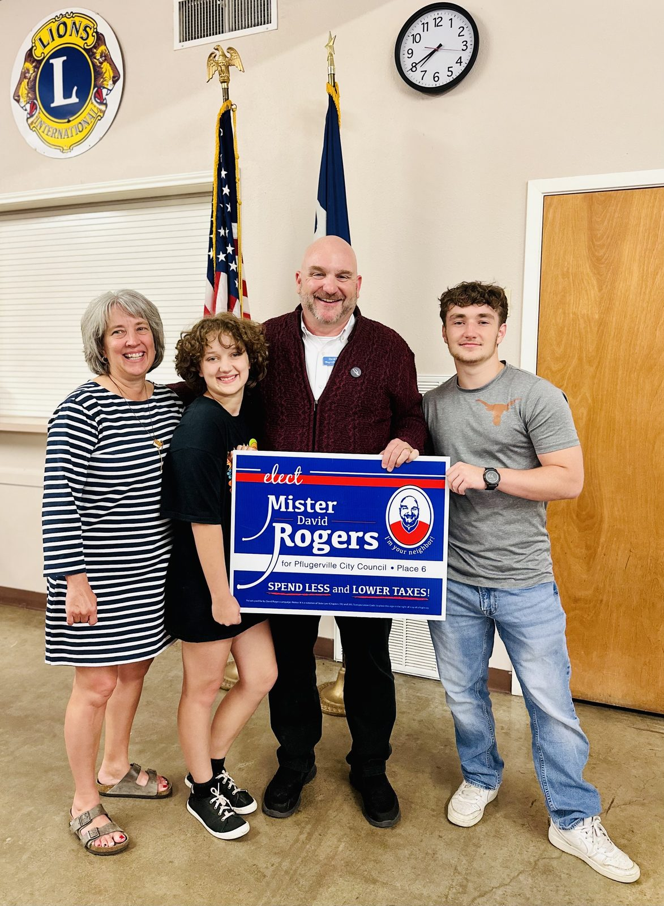

Why I’m running again
Howdy, neighbor. When I first asked for your vote, I promised to treat your tax dollars like my own and to keep Pflugerville the kind of place we’re all proud to call home. I’m running again because that work isn’t finished.

Together we stopped the largest tax hike in the city’s history, lowered the tax rate in four separate years, and grew the homestead exemption from $35,000 to $50,000. That’s real money back in your pocket. But over the same years I’ve watched our city’s spending and debt climb faster than they should, too often on flashy megaprojects instead of the everyday services families actually count on. We can do better, and we have to.
What’s next
I’m running on three simple promises. First, trust and transparency: open books, budgets in plain English, and real public input before big decisions get made. Second, getting spending and debt back under control so we stop mortgaging our kids’ future on projects that don’t serve the neighborhood. Third, keeping Pflugerville affordable for everyone by holding the line on taxes and fees and making sure every neighbor has a real seat at the table in one of the most diverse towns in Texas.
“A beautiful day in Pflugerville means a city that’s honest with you, careful with your money, and open to every neighbor.”
Thank you for reading, and for everything you do for this town. If you believe in this work, I’d be grateful for your help. Chip in, volunteer an afternoon, or put a sign in your yard. Let’s keep Pflugerville a beautiful place to call home.